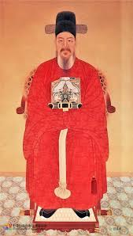

충무공 이순신
"물령망동 정중여산(勿令妄動 靜重如山) — 경거망동하지 말고 산처럼 무겁게 행동하라."

- 본관 / 자: 덕수(德水) / 여해(汝諧)
- 소개: 임진왜란 당시 탁월한 전략과 전술, 철저한 선견지명으로 조선 수군을 이끌어 백전백승을 거둠으로써 국가를 절체절명의 위기에서 구한 조선의 명장.
- 핵심 가치: 철저한 준비성, 원칙과 소신, 사상 초유의 위기 극복 능력(명량대첩), 군신(君臣)의 의리.
- 생몰 연도: 1545년 ~ 1598년
1. 인적 사항 및 초기 생애 (시련의 시작)
- 가계와 성품: 조부 이백록이 기묘사화에 희생된 후 가세가 기울었으나, 어머니 변씨의 엄격하고 철저한 가정교육 하에서 불의를 참지 못하고 약자에게 따뜻한 성품을 형성함
- 무과 급제와 녹둔도 사건: 1572년 무과 시험 중 낙마하여 실격하는 아픔을 겪은 후, 1576년 식년무과에 급제함. 북방 함경도 녹둔도 부임 시절, 여진족의 침입을 예견하고 병력 충원을 요청했으나 거부당함. 결국 중과부적으로 피해를 입자 책임을 떠안고 첫 번째 백의종군(白衣從軍)을 당함.
- 파격적인 승진: 유성룡, 이산해 등의 추천으로 승진 가속도가 붙어 1591년 관직의 단계를 뛰어넘어 전라좌도수군절도사로 파격 임명됨. 주변의 시기와 반발 속에서도 거북선 제작, 지자·현자총통 발사 훈련 등 다가올 전쟁을 유일하게 완벽히 대비함.
2. 임진왜란 수군 4대 출전 (제해권 장악)
- 시기: 1592년 5월 7일
- 핵심 전황 및 의의: 조선 수군의 역사적인 첫 승리입니다. 포구에서 약탈을 자행하던 일본 함대를 기습 공격하여 대선 13척을 포함해 총 21척을 격파했습니다. 개전 초기 연이은 패배로 침체되어 있던 조선군과 백성들에게 "일본군을 이길 수 있다"는 강력한 자신감을 심어준 중요한 전환점이 되었습니다.
- 시기: 1592년 5월 29일
- 핵심 전황 및 의의: 역사상 거북선이 최초로 실전에 투입된 전투입니다. 밀물 조류를 영리하게 이용해 좁은 포구 안으로 진입한 뒤, 거북선을 앞세워 일본 전함을 전멸시켰습니다. 치열한 전투 속에서 이순신 장군이 왼쪽 어깨에 총탄을 맞는 부상을 입기도 한 극적인 해전입니다.
- 시기: 1592년 7월 8일
- 핵심 전황 및 의의: 세계 해전사에 길이 남을 위대한 대승입니다. 수심이 얕고 좁은 견내량에 웅거하던 적들을 넓은 한산도 앞바다로 완벽하게 유인해 낸 뒤, 그 유명한 학익진(鶴翼陣)을 펼쳐 일본 주력 함대 70여 척을 포위 격멸했습니다. 이 패배로 일본의 서해 진출 및 수륙병진(바다와 육지로 동시 진격) 보급로가 완전히 차단되었으며, 충격을 받은 도요토미 히데요시는 이후 조선 수군과의 해전을 금지하는 '해전 기피 명령'을 내리게 됩니다.
- 시기: 1592년 9월 1일
- 핵심 전황 및 의의: 일본 수군의 심장부이자 본거지를 직접 타격한 과감한 공세였습니다. 적선 470여 척이 빽빽하게 밀집해 있던 부산포를 향해 총공격을 감행하여 적선 100여 척을 완파했습니다. 압도적인 수적 열세를 뚫고 들어간 과감한 진격전이었으나, 안타깝게도 전라좌수영의 핵심 장수이자 이순신의 오른팔이었던 우부장 정운(鄭運) 장군이 전사하는 아픔을 겪기도 했습니다.
- 삼도수군통제사 임명(1593): 한산도로 본영을 옮긴 후 초대 통제사에 오름. 강화교섭기로 전염병이 돌고 양식이 부족해 군사들이 굶어 죽어가는 악조건 속에서도 군기를 유지하며 전선과 무기를 보수함.
제1차 출전: 옥포 해전
제2차 출전: 사천 해전
제3차 출전: 한산도 대첩
제4차 출전: 부산포 해전
3. 모함과 백의종군, 그리고 기적의 재기 (1597년)
- 간첩 요시라의 반간계: 일본 고니시 유키나가의 부하 요시라가 가토 기요마사의 도해 정보를 흘리며 요격을 유도함. 이순신은 불확실한 정보와 모험적 지형을 이유로 출진을 신중히 함.
- 투옥과 고문: 조정은 이순신이 명령을 거역했다며 비난했고, 원균이 대안으로 부상함. 한양으로 압송된 이순신은 가혹한 국문을 받으며 죽음의 위기에 처했으나 정탁의 변호로 목숨을 건지고 두 번째 백의종군을 명받음.
- 칠천량 해전의 참패: 이순신 대신 통제사가 된 원균은 1597년 7월 칠천량에서 일본군에 대패하여 조선 수군을 완전 궤멸시킴.
- 명량 대첩 (기적의 13척): 삼도수군통제사로 재임용된 이순신은 "아직 전선 12척(추후 13척)이 남아있으니 죽기를 각오하고 싸우면 막을 수 있다"는 장계를 올림. 9월 16일, 울돌목의 좁은 지형과 독특한 조류 변화를 이용해 133척의 적군에 맞서 31척을 파괴하는 기적적인 대승을 거두고 제해권을 재장악함.
4. 노량해전과 위대한 전사 (1598년)
- 상황: 1598년 8월 도요토미 히데요시가 사망하자 일본군은 철수를 시도함. 명나라 수군제독 진린은 뇌물을 받고 길을 열어주려 했으나, 이순신은 적을 온전히 보내줄 수 없다며 강력히 반대하고 진린을 설득함.
- 노량 해전 (11월 19일): 순천왜성에 고립된 고니시를 구하러 온 시마즈 요시히로 등의 일본 연합 수군과 격돌함. 난전 와중에 위험에 처한 명나라 진린의 배를 구출하는 등 맹공을 퍼부음.
- 유언: 뱃머리에서 전투를 독려하던 중 적의 유탄에 가슴을 맞음. 죽는 순간까지 "싸움이 바야흐로 급하니 내가 죽었다는 말을 삼가라(戰方急 愼勿言我死)"라는 유언을 남김. 조카 이완이 죽음을 숨기고 독전하여 대승을 거둔 후 전쟁이 최종 종결됨.
5. 사후 추증 및 현충 시설 (현창 사업)
- 추증: 영의정(1793년 정조 대 추가 추증), 선무공신 1등 녹훈, 덕풍부원군 추봉.
- 주요 사당: * 아산 현충사(顯忠祠): 숙종 연간(1707년) 사액을 받았으며, 현재 가장 큰 규모의 사당.